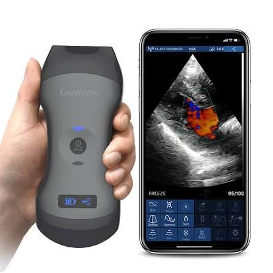
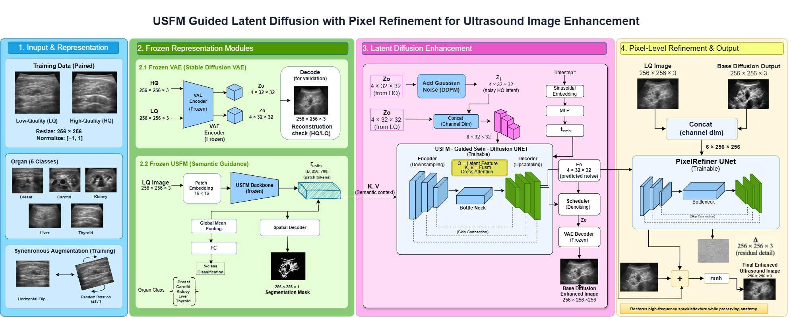
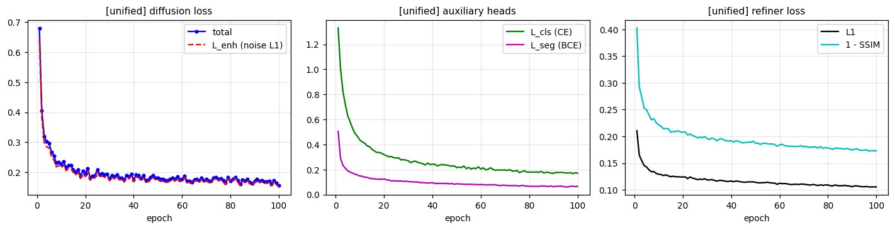
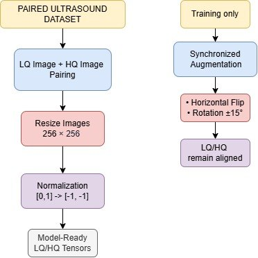
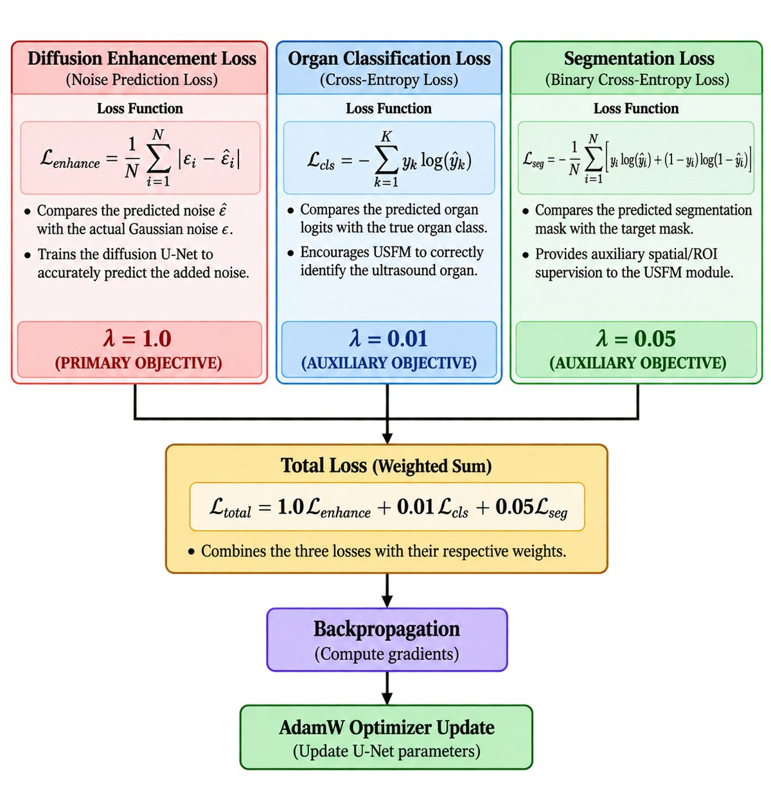
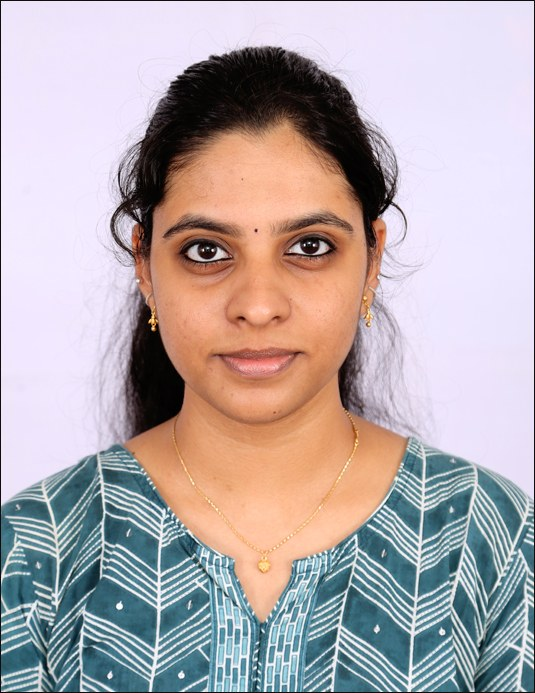

Multi-organ ultrasound, cleaned up without losing the anatomy.
A multi-task deep learning pipeline that removes speckle noise and restores texture in handheld ultrasound images, while recognising the organ and segmenting its structures.
Liver, held-out image. Drag the slider to reveal the enhanced result.
Handheld ultrasound is everywhere. Its image quality is not.
Ultrasound is non-invasive and works at the point of care, and handheld probes bring it to resource-limited settings. Their hardware constraints add speckle noise, lower spatial resolution and artifacts, which reduces diagnostic reliability compared with full-scale systems.
Deep learning enhancement can close that gap, but existing methods tend to smooth away real tissue detail or invent structures that are not there.

- G1Speckle and artifactsSpeckle noise, low spatial resolution and imaging artifacts remain in handheld scans.
- G2No multi-organ consistencyMost models are tuned for one organ and have no semantic awareness of what they are enhancing.
- G3Over-smoothingRemoving noise often erases fine anatomical detail.
- G4Anatomical hallucinationGenerative enhancement can add structures that do not exist.
- G5Extreme variabilityAnatomy and image appearance vary widely between patients and organs.
One architecture, four tasks, one downstream goal.
Develop a multi-task architecture for ultrasound images from handheld devices, then use the enhanced, structure-preserving images for accurate disease prediction and clinical decision support.
Anatomy-aware speckle reduction
Suppress noise while keeping tissue boundaries intact.
Texture enhancement
Recover the fine texture that low-end hardware loses.
Organ classification
Identify which organ is being imaged, so enhancement can be organ-aware.
Semantic segmentation
Produce pixel-wise anatomical masks that guide the denoiser.
Disease prediction
Feed enhanced images and segmentation maps into a binary disease presence classifier.
USFM-guided latent diffusion with pixel refinement.
Training happens in a compressed latent space to keep the cost low on limited GPUs. A frozen ultrasound foundation model supplies the semantic guidance, and a small pixel-space network restores fine speckle at the end.

Full architecture. Scroll sideways on small screens.
Forward diffusion
z_t = √ᾱ_t · z₀ + √(1 − ᾱ_t) · ε
ε ~ N(0, I)z₀ is the clean latent, z_t the noisy latent at step t, and ᾱ_t the cumulative noise schedule.
Cross-attention (USFM guidance)
Attention(Q,K,V) =
softmax( Q·Kᵀ / √d_k ) · VQ comes from the noisy latent. K and V come from the USFM embedding F_usfm, which is how organ awareness steers denoising.
Total loss
L = 1.0·L_enhance
+ 0.01·L_cls + 0.05·L_segNoise-prediction loss is the main objective. Organ cross-entropy and segmentation loss are auxiliary.
Slide to see what the model changes.
One held-out image per organ. Compare the noisy input with the final output, with and without the ROI gate, look at the base diffusion output on its own, or compare the final result with the ground truth.
Organ
Compare
Use the slider to reveal the enhanced image.
Consistent PSNR gains. SSIM depends on the ROI gate.
Held-out split: 123 pairs (15% of each organ). Test partition: 210 separate pairs from the dataset's test set, scored with the saved checkpoints and no retraining. One training run, seed 42.
PSNR by organ
Higher is better. Held-out images, noisy input vs. final output.
SSIM by organ
Higher is better. Held-out images, noisy input vs. final output.
Training curves
Denoiser total and noise-prediction loss, auxiliary classification and ROI losses, and refiner L1 and (1 − SSIM) terms.

Every pipeline stage, per organ
LQ is the noisy input, Base is the diffusion output alone, Refined adds the pixel refiner, +Gate also keeps the input outside the imaging sector.
Does USFM guidance matter?
Held-out images, trained pipeline run with real tokens, zeroed tokens, or tokens from a different organ.
| Organ | PSNR (dB) | SSIM | ||||
|---|---|---|---|---|---|---|
| True | Zero | Wrong | True | Zero | Wrong | |
| Breast | 20.04 | 19.59 | 19.80 | .753 | .736 | .750 |
| Carotid | 21.03 | 19.84 | 19.89 | .765 | .736 | .754 |
| Kidney | 23.72 | 21.60 | 23.57 | .586 | .523 | .582 |
| Liver | 23.87 | 21.78 | 22.28 | .592 | .529 | .543 |
| Thyroid | 21.83 | 20.58 | 21.28 | .779 | .748 | .764 |
| Average | 22.10 | 20.68 | 21.37 | .695 | .654 | .679 |
Removing the guidance costs about 1.4 dB PSNR.
Organ classification and ROI heads
Accuracy of the organ head and Dice of the ROI head against pseudo-ROI masks.
| Organ | Acc. held-out | Acc. test | Dice held-out | Dice test |
|---|---|---|---|---|
| Breast | 100.0% | 100.0% | 0.996 | 0.949 |
| Carotid | 97.1% | 91.2% | 0.965 | 0.869 |
| Kidney | 85.7% | 70.8% | 0.951 | 0.680 |
| Liver | 88.2% | 96.7% | 0.935 | 0.650 |
| Thyroid | 100.0% | 93.1% | 0.966 | 0.836 |
| Overall | 95.9% | 91.9% | n/a | n/a |
100% complete, with the full chain integrated and tested.
| Module | Current state | Status |
|---|---|---|
| Data ingestion | Paired LQ/HQ loader, 5 organs, 256×256, synchronized augmentation | Functional |
| VAE compression | Frozen pretrained VAE, round-trip PSNR/SSIM verified | Functional |
| USFM backbone | ViT-base with classification and segmentation heads | Functional |
| Swin-Diffusion U-Net | Cross-attention guided, 8-channel input, ablation-verified | Functional |
| Training | Composite loss, AdamW, resumable checkpoints, 100 epochs | Functional |
| Pixel refiner | Residual U-Net trained on cached sampler outputs, plus optional ROI gate | Functional |
| Evaluation | Held-out (123) and test partition (210): PSNR, SSIM, LPIPS, entropy | Functional |
| Integration | Dataset → VAE → USFM → Diffusion → Refiner → Metrics | Integrated |
Plan and status
- Improve scores ONGOING
- Test the complete pipeline DONE
- Implement binary-class disease prediction DONE
- Complete coursework DONE
- Prepare research paper draft DONE
- Develop the web application DONE
Everything needed to understand and rerun the work.
Dataset and preprocessing
840 paired low-quality / high-quality images across breast, thyroid, liver, kidney and carotid, from the USenhance2023 Grand Challenge (aligned version on Hugging Face). Split per organ: 717 train, 123 held-out. A separate 210-pair test partition is used only for final scoring.
- Resize to 256 × 256
- Normalise intensities from [0, 1] to [−1, 1]
- Training only: matched horizontal flip and rotation ±15° applied to both images

Hyperparameters
| Optimizer | AdamW |
| Learning rate | 1e-4 |
| Batch size | 16 |
| Epochs | 100 (denoiser), 100 (refiner) |
| Refiner learning rate | 2e-4 |
| Sampler | DDIM, start index 35, 15 steps, η = 0 |
| Seed / split | 42 / 85% – 15% |
| Training time | ≈ 2.5 h, one cloud GPU |
| λ enhance / cls / seg | 1.0 / 0.01 / 0.05 |
| Latent size | 4 × 32 × 32 |
| Frozen ViT parameters | 85.8 M |
| Trainable: denoiser / heads / refiner | 8.64 M / 3.81 M / 1.93 M |
Working in latent space is about 8× cheaper than pixel-space diffusion, which suits limited GPU resources.
Loss functions

VAE round-trip check
Encode then decode each organ to measure how much the latent space preserves before any diffusion training.
| Organ | PSNR (dB) | SSIM |
|---|---|---|
| Liver | 28.97 | 0.790 |
| Kidney | 28.92 | 0.790 |
| Thyroid | 28.71 | 0.732 |
| Carotid | 28.64 | 0.740 |
| Breast | 27.19 | 0.628 |
Cross-attention ablation
The same noisy latent is denoised once with real USFM guidance and once with a zeroed context vector. A non-zero output difference confirms the guidance is wired into the network.
- Mean absolute difference:
1.037 - Max absolute difference:
2.967
Sampler, refiner and ROI gate
- DDIM from the noised low-quality latent: step 35 of a 50-step schedule, 15 steps, η = 0, no latent clipping
- Refiner trained on cached outputs of that same sampler (2 noise draws per image), loss L1 + 5·(1 − SSIM)
- ROI gate keeps the input outside the imaging sector, which SSIM penalises heavily for kidney and liver
Stage-wise numbers for every organ are in the Results section.
Research paper
Final draft: Multi-Organ Anatomy-Preserving Speckle Reduction and Texture Enhancement in Ultrasound Images Using Semantic-Guided Latent Diffusion with Pixel Refinement.
Notebook map
- Phase 0: environment and Drive setup
- Phase 1: paired dataset pipeline
- Phase 2: VAE round-trip test
- Phase 3: USFM backbone with two heads
- Phase 4: Swin-Diffusion U-Net
- Phase 5: cross-attention check
- Phase 6: synchronized augmentation check
- Phase 7: joint training, resumable
- Module 7 to 9: training, base inference, pixel refiner
- Module 10: held-out and test-partition evaluation
- Multi-task heads, guidance ablation, inference API
References
- A novel CycleGAN network applicable for enhancing low-quality ultrasound images of multiple organs. J. King Saud Univ. Comput. Inf. Sci., 2025
- ScienceDirect article S0169260725003736
- IEEE Xplore document 10879338
- USFM: A universal ultrasound foundation model generalized to tasks and organs towards label efficient image analysis. Med. Image Anal., 2024
- Medical ultrasound image speckle reduction and resolution enhancement using texture compensated multi-resolution convolution neural network. Front. Physiol., 2022
- US-Net: A lightweight network for simultaneous speckle suppression and texture enhancement in ultrasound images. Comput. Biol. Med., 2023
- ScienceDirect article S2667099222000159
- IEEE Xplore document 8417930
Datasets and resources: USenhance2023 Aligned (Hugging Face) · UltrasoundEnhance2023 Grand Challenge · Latent Diffusion Models (arXiv)
See the pipeline run.
Add your recordings in the VIDEOS list at the top of the script. A direct .mp4 plays inline; any other link opens in a new tab.
The people behind it.

Project guide · Assistant Professor, Department of CSE